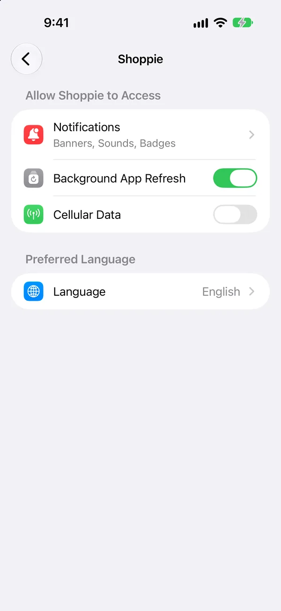
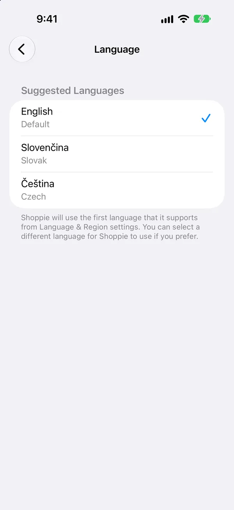

How to change Shoppie’s language
-
Step 1 Open iPhone Settings
Open iPhone Settings → Apps → Shoppie and tap Preferred Language → Language.

-
Step 2 Choose a language
Under Suggested Languages, choose Slovenčina, Čeština or English. Shoppie switches the next time you open it.

Frequently asked questions
Which languages is Shoppie available in?
Slovak, Czech and English.
Why don’t I see a language option?
Your iPhone shows it when more than one language is added in Settings → General → Language & Region.
More questions are answered on the Support page.